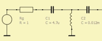
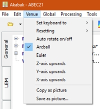
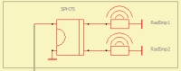
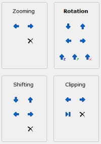

Drawing Controls
| Home | Desktop |
 |
 |
 |
 |
 |
The 3D-Viewer renders acoustic boundaries, pressure points and field calculation results of the BEM-Part. The scene is drawn in orthographic projection. Components can be check visible/un-visible at the tables. Further there are checks at Page Views.
The Schematic Designer handles the lumped element networks of the LEM-Part. The Designer is a 2D-Drawing tool with wiring. Parameters of a selected element can be edited with the help of the LE-Parameter Editor.
The 3D-Viewer and the Schematic Designer can be controlled with the help of the mouse and the keyboard. For this to work the viewer or the schematic designer should have focus (click into it).
Main-Menu
Set keyboard to
Rotating, Shifting, Zooming, Clipping. If you activate one of these items then control-keys of your keyboard operate accordingly. For example if Rotating is clicked then any press on up/down and left/right will rotate the scene.
Axis Upwards
Use this feature to quickly rotate the structure with one of the axis pointing upwards. Clicking again rotates the view by 90 degree.
Secondly this setting controls also the rotation axis for Euler-Rotation.
Resetting
Resets rotation, shift, zoom and clipping.
ArcBall, Euler
Toggling rotation-modes.
Copy as Picture
Copies the current view of the 3D-Viewer or of the schematic designer onto the clipboard as a bitmap. The bitmap-format can be selected via menu Options/Preferences-Graphics.
Save as Picture
This function allows to save the current view of the 3D-Viewer or of the schematic designer as a bitmap. The bitmap-format can eventually be selected in the file-dialog-form at "Save as Type".
Mouse
Selection
Many operation operate on the currently selected item. A selected item has input-focus.
Basically, selection happens on mouse-click. Normally it is mutually exclusive, which means all other items get un-selected.
At places selection is extended, so we can select/un-select multiple items. For example, in the schmatic designer there can be selected multiple components. If multiple selection is available menu Edit/Select all will select all components. Groups of components of the schematic designer can be selected with the help of a focus rectangle; click somewhere and drag the mouse, which opens this rectangle. All components within get selected. Alternatively, for extended selection use the SHIFT key while clicking with the mouse.
Rotation
Left-click and drag. Press CTRL-key for rotation on a finer grid. See at rotation-modes.
Shifting
Wheel- or middle-click and drag. The structure is panned until the mouse button is released.
Zooming
Rotate the mouse-wheel for zooming the view in and out of the structure.
Keyboard
The view can be translated with the LEFT/RIGHT and UP/DOWN keys. Increase the step with simultaneously pressing the CTRL-key. The HOME-key rests the default values. The END-key yields maximum zooming or clipping.
Use menu Drawing/Set Keyboard To... to select, whether the keys rotate, shift, zoom or clip the structure.
Alternatively simply type
R Rotation mode
S Shifting mode
Z Zooming mode
C Clipping mode
Note, for the quick-keys to work the drawing should have input-focus.
For example: Press "R" and then the LEFT-key in order to rotate to the left. Press "C" and then the END-key in order to set the clipping to maximum. And so on.
Desktop Buttons
On the right of the Desktop you find a page labelled "Drawing". These buttons navigate the 3D-viewer and the schematic-designer. The function is similar to mouse and keyboard operation.
Buttons labeled Zooming, Rotation, Shifting, Clipping switch LEFT/RIGHT and UP/DOWN keys.